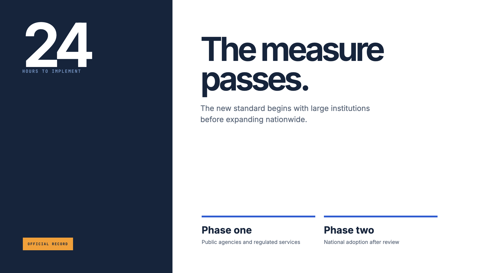

Approved Style Master A
OPEN VISUAL STYLE · DOMAIN TEMPLATE PACKAGE
this visual system
A sober institutional palette separates decision, deadline, affected public, and implementation so composition comes from clarity rather than ornament.
English visible content · twelve mutable composition references · two approved Style Masters · no pagination UI · no static timeline code.

Approved Style Master B
National Brief
The approved identity frame establishes the dominant visual signal without prescribing a video opening.
Open full-resolution frameDecision Deadline
The approved second frame proves that the style can reorganize around evidence or explanation.
Open full-resolution frameDeadline Reading
One decisive value and the context required to interpret it.
Open full-resolution frameImplementation Order
A short progression makes order and handoff visible without becoming a fixed storyboard.
Open full-resolution framePolicy Structure
One primary system is explained through a small number of meaningful layers.
Open full-resolution frameOfficial Portrait
The person is the primary visual mass while context occupies a separate quiet territory.
Open full-resolution framePublic Statement
One voice fills the field; attribution stays quiet and traceable.
Open full-resolution frameMeasure Inspection
One object, body region, place, or record receives only the annotations needed to understand it.
Open full-resolution frameNational Context
A broad contextual field carries the setting while text protects a calm reading zone.
Open full-resolution frameService Resolve
A widened final composition reunites the human anchor, evidence, and takeaway.
Open full-resolution frame